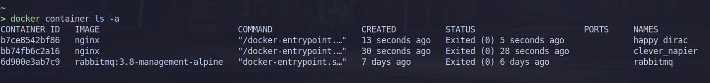
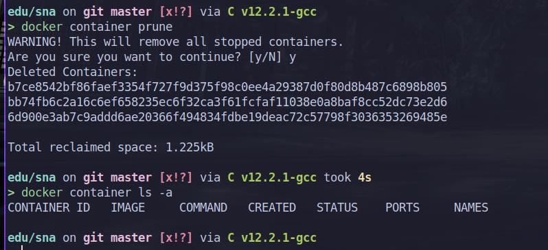
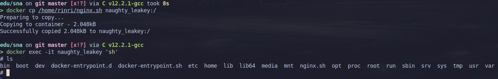

Lab 11 Solution Amirlan Sharipov (BS21-CS-01)
Table of Contents
1. Question 1
Source: https://stackoverflow.com/questions/21553353/what-is-the-difference-between-cmd-and-entrypoint-in-a-dockerfile Usually, the entrypoint is /bin/sh -c CMD. So this command gets executed when the container is run. It’s a standard practice to customize CMD, though. If you want to use other shell for executing commands, it may be useful to customize the entrypoint.
2. Question 2
2.1. Choose a host OS that provides maximum container isolation. (hardened host OS)
2.2. Use network namespaces
2.3. Use kubernetes to manage access right
2.4. Monitor the logs using SIEM tools
2.5. Don’t use outdated images
3. Question 3
 
4. Question 4
Source: https://docs.docker.com/engine/reference/commandline/cp/ docker cp [OPTIONS] CONTAINER:SRC_PATH DEST_PATH|-
Example:
cat ~/nginx.sh
#!/bin/bash
docker run \
-v /etc/ssl/certs/monica.crt:/etc/ssl/certs/monica.crt \
-v /etc/ssl/private/monica.key:/etc/ssl/private/monica.key \
-v /home/rinri/.config/nginx:/etc/nginx/conf.d \
-v /home/rinri/edu/sna/:/var/www \
-p 80:80 -p 443:443 -p 5000:5000 \
--restart unless-stopped \
-d nginx
After running nginx.sh: 
5. Question 5
echo "Run Nginx container:" cat ~/nginx.sh echo "Config file:" cat ~/.config/nginx/test.conf
Run Nginx container:
#!/bin/bash
docker run \
-v /etc/ssl/certs/monica.crt:/etc/ssl/certs/monica.crt \
-v /etc/ssl/private/monica.key:/etc/ssl/private/monica.key \
-v /home/rinri/.config/nginx:/etc/nginx/conf.d \
-v /home/rinri/edu/sna/:/var/www \
-p 80:80 -p 443:443 -p 5000:5000 \
--restart unless-stopped \
-d nginx
Config file:
server {
listen 5000;
listen [::]:5000;
root /var/www;
index index.html index.htm;
location / {
try_files $uri $uri/ =404;
}
}
server {
listen 80;
listen [::]:80;
server_name monica.local;
return 302 https://$server_name$request_uri;
}
server {
listen 443;
listen [::]:443;
include conf.d/snippets/self-signed.conf;
server_name monica.local;
location / {
proxy_pass http://172.17.0.4;
proxy_set_header Host monica.local;
}
}
6. Question 6
In /etc/rsyslog.conf: $ModLoad imtcp.so $InputTCPServerRun 514
Command: docker run -it –log-driver syslog –log-opt syslog-address=tcp://172.17.0.1:514 alpine ash
7. Question 8
FROM alpine RUN apk add –update –no-cache python3 && ln -sf python3 /usr/bin/python RUN python3 -m ensurepip RUN pip3 install –no-cache –upgrade pip setuptools RUN touch index.html RUN echo “<html><h1>Testing web</h1></html>” >> index.html CMD [“python”, “-m”, “http.server”]
changed apt to apk. source: https://stackoverflow.com/questions/62554991/how-do-i-install-python-on-alpine-linux